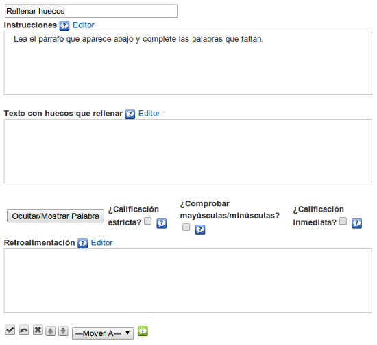

Utilizaremos este iDevice para proponer al alumno un texto con espacios en blanco que deberán ser completados. Incluye la posibilidad de retroalimentación.
Dispondremos de varias opciones de corrección:
- Flexibilidad en la respuesta: admite como buenas las respuestas que sólo se diferencien en una letra.
- Admitir error de la primera mayúscula: considera correcta la palabra aunque la primera letra (mayúscula/minúscula) no sea correcta.
- Corrección inmediata: corrige al completar la palabra sin esperar a que el usuario lo solicite.
Al seleccionar el iDevice "Rellenar huecos" del listado de iDevices se nos mostrará lo siguiente en nuestro eXeLearning:

En la parte superior tendremos la posibilidad de modificar el título del iDevice.
En el apartado "Instrucciones" escribiremos el texto con las instrucciones para realizar la actividad.
En el apartado "Texto con huecos a rellenar" escribiremos el texto sobre el que se creará la actividad, seleccionando la palabra o palabras que queremos hacer desaparecer haciendo clic en el botón "Ocultar / mostrar palabra".
Tendremos la posibilidad de marcar diferentes opciones de corrección.
Por último en el apartado "Retroalimentación", incluimos aquellas informaciones e indicaciones que puedan servir de ayuda o complemento a nuestros alumnos para realizar la actividad propuesta.